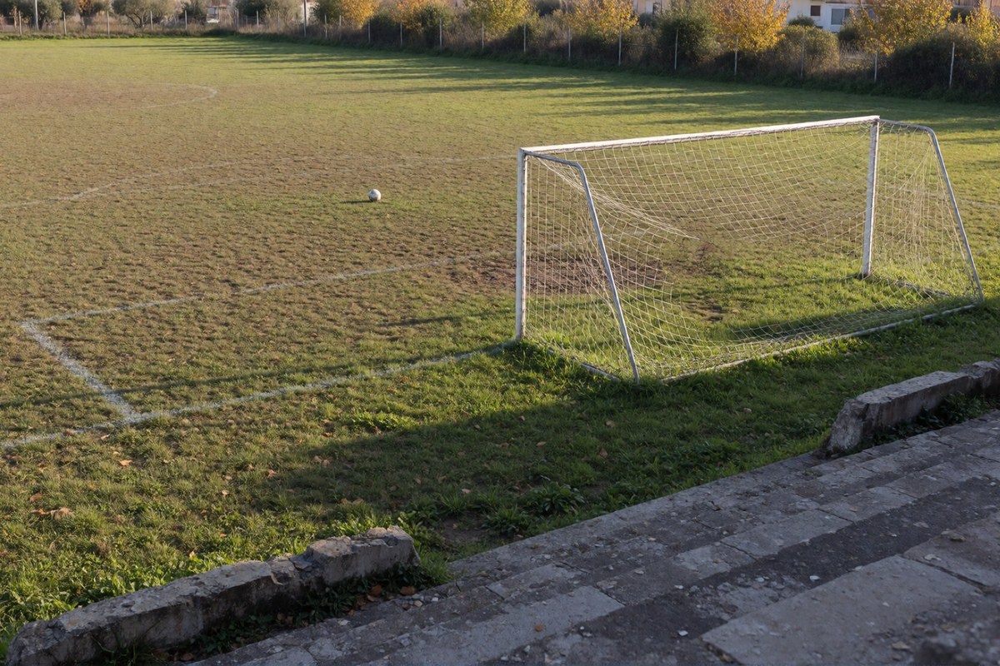

Sicilia · 22 novembre 2026
Marsala, espulso torna in campo con un coltello: gara sospesa

In una partita di terza categoria a Marsala un giocatore, dopo il rosso, sarebbe rientrato sul terreno con un coltello a scatto. La ricostruzione è della squadra ospite: la gara è stata sospesa e sono intervenute le forze dell'ordine.
di Franco Zanghì
Espulso per aver preso a calci un avversario a gioco fermo. Poi, secondo la squadra ospite, è tornato in campo con un coltello a scatto in mano. La partita è stata sospesa.
È successo domenica 22 novembre a Marsala, al campo polisportivo Di Dia, in contrada Strasatti, nella quarta giornata del girone unico di Trapani di terza categoria. In campo c'erano il Galactic Paolini e l'Athletic Partanna.
La ricostruzione
Il racconto è quello pubblicato sui social dall'Athletic Partanna e ripreso dalle testate trapanesi. Un giocatore del Galactic Paolini avrebbe prima insultato e minacciato più volte la panchina avversaria. Poi, dopo uno scontro di gioco, avrebbe colpito con diversi calci un avversario a gioco fermo. L'arbitro lo ha espulso; espulso anche l'allenatore del Partanna, entrato in campo per soccorrere il suo giocatore.
È qui che, sempre secondo la società ospite, la situazione degenera: il giocatore va negli spogliatoi e torna sul terreno con un coltello a scatto aperto, minaccia allenatore, dirigenti e calciatori e afferra per il collo un dirigente, tenendo l'arma nell'altra mano. Secondo il vicepresidente del Partanna, Alberto Calandra, l'uomo afferrato per il collo è suo padre, di 81 anni.
Che cosa è accertato
Su alcune cose le testate concordano, e non dipendono dal racconto di una sola parte: l'arbitro ha sospeso definitivamente la gara dopo una quindicina di minuti; il vicepresidente del Partanna ha chiamato il 112; le forze dell'ordine sono intervenute, hanno raccolto le testimonianze e identificato le persone coinvolte.
Tutto il resto, per adesso, è la versione dell'Athletic Partanna. Il Galactic Paolini non ha replicato pubblicamente, e nelle fonti consultate non risultano dichiarazioni del calciatore. Nessuna denuncia risulta ancora depositata: la società ospite ha annunciato che segnalerà l'episodio alla Federcalcio e alle autorità.
La reazione della Lega
Il presidente del comitato regionale siciliano della Lega nazionale dilettanti, Sandro Morgana, ha condannato l'accaduto, ha chiesto un intervento della giustizia sportiva e ha parlato di inibizione per il responsabile, qualora le contestazioni venissero accertate. Provvedimenti del giudice sportivo, al momento, non ce ne sono.
Il punto
Un'espulsione, un coltello a scatto, una partita sospesa e una chiamata al 112. In terza categoria, dove si dovrebbe giocare per passione e per divertirsi.
La ricostruzione è di una sola delle due squadre, e chi è accusato resta innocente fino a prova contraria. Ma se davvero per un rosso qualcuno va negli spogliatoi e torna con una lama, il problema non è il regolamento: è che cosa ci siamo abituati a chiamare sport.
Fonti
- ANSA, «Calciatore espulso torna in campo minacciando avversari con un coltello», 22 novembre 2026
- Tp24, «Marsala, calciatore espulso torna in campo con un coltello», 22 e 23 novembre 2026
- Risoluto, «Marsala, espulso dalla partita torna in campo con un coltello», di Giovanna Venezia, 23 novembre 2026
- NewSicilia, «Marsala, calci a un avversario e minacce con un coltello dopo l'espulsione», 23 novembre 2026
La ricostruzione dei fatti contestati è quella pubblicata dall'Athletic Partanna e ripresa dalle testate citate: per chi è accusato vale la presunzione d'innocenza. Il nome del calciatore, quello dell'allenatore e quello del dirigente afferrato per il collo non vengono pubblicati qui. L'età di 81 anni del dirigente compare soltanto in Tp24 e viene dalla stessa parte che ha denunciato l'episodio. Alla data di pubblicazione non risultavano né denunce depositate né provvedimenti della giustizia sportiva.